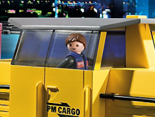
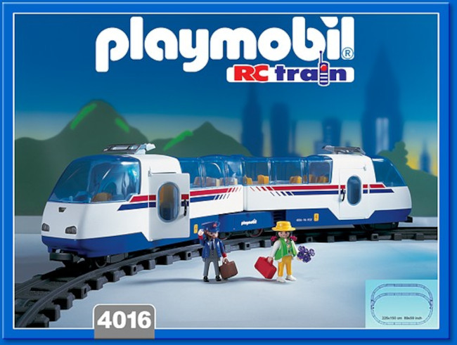
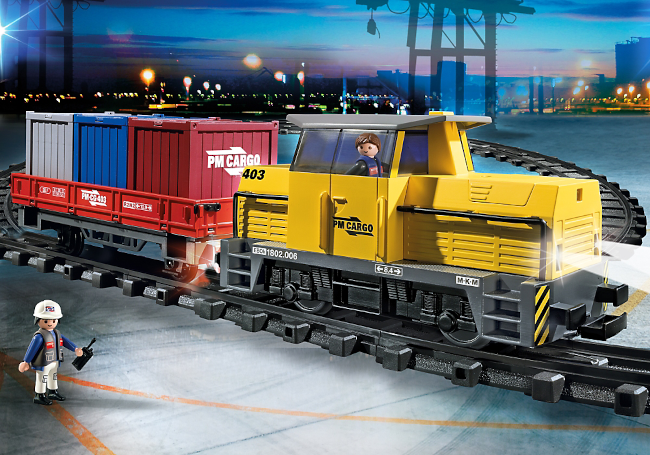

They don’t make ’em like that any more: Playmobil RC model trains

Ernst Paul Lehmann introduced the world to Lehmann Gross Bahn (LGB) G-scale (“garden scale”) model railways back in the 60s. LGB model trains were, and are, substantial enough for outdoor use, running on track with a 45mm gauge. A typical locomotive weighs 1-2kg.
Despite their heft, most LGB models were finely detailed scale replicas of real railway stock; they were, and remain, ruinously expensive, and hardly suitable for small children. The exceptions are the ‘starter’ sets, which can still be bought new for £200-300. Not pocket change, to be sure, but the starter sets include a locomotive, a few wagons, a circle of track, and a power transformer – enough to get started playing trains outdoors. I’ve always wondered whether the starter sets were a loss-leader for the manufacturer, sold at less-than-cost price to entice people into the devastatingly expensive world of garden railway modelling. Whether that’s true or not, I own a couple of complete starter sets, and parts from others, and I’ve never even considered buying any of the more expensive LGB locomotives. Not that I could afford to.
In 1980, the Playmobil company – better known for its range of rugged, all-pastic toys – joined forces with Lehmann to produce a range of LGB-compatible toy trains for kids. The locos and coaches had the same 45mm gauge and 22:1 scale as LGB, and were superficially similar in appearance. However, the Playmobil rolling stock was definitely toy-like: all plastic, with coarse detailing that could stand some abuse from the little folk.
The original Playmobil train sets were supplied with LGB track, which could be extended with other elements from the LGB range, if you were wealthy enough. LGB track was, and still is, made of solid brass, with a realistic cross-section, attached to separate, moulded sleepers. It isn’t surprising that it’s so expensive. I presume that the intention behind supplying LGB track was that the young owner of a Playmobil train set would graduate in due course to running real LGB rolling stock on the LGB track. Whether any did – presumably after selling a kidney – I don’t know.
Like LGB, the first Playmobil locomotives were track-powered, using a mains transformer. Playmobil transformers didn’t produce as high a voltage as LGB transformers, although neither would be likely to deliver an electric shock in dry conditions. However, the transformers weren’t really designed for all-weather use, and could conceivably have been a shock hazard if operated in the rain.
In addition, the track had to be kept scrupulously clean, including the joints where sections of track butted together, as did the power pick-ups on the locomotive. These might have been the metal wheels, or separate spring-loaded pads that pressed on the track. If any of these contacts were substandard, current couldn’t reach the motor, and the train would stop. Serious adult modellers might have been willing to spend the hours needed to keep their track in perfect running order, but few children had that kind of dedication. Nor did I – I converted my LGB locomotives to battery power as soon as it became practicable.
In 1987, Playmobil split with LGB, and decided to manufacture complete garden train sets themselves. In place of the inconvenient and potentially dangerous track power, their first home-grown sets were battery-powered, with remote controls (hence “RC”). Instead of the expensive, brass LGB track, the new sets were supplied with a newly-designed, all-plastic track, whose rails and sleepers were moulded in a single piece. Realism took a beating, to be sure, but the new track was a fraction of the price of LGB’s product, more robust, and maintenance-free.
As you can see from the photo below, Playmobil RC trains were clearly toys, rather than collectable scale models.

The locomotives and coaches had lots of chunky moving parts for little fingers to fiddle with, and they accommodated the popular Playmobil mini-figures. The track maintained the LGB 45mm scale, but it wasn’t backward-compatible: you couldn’t extend Playmobil RC track with LGB track, even if you could afford to. In fact, annoyingly, Playmobil RC locomotives wouldn’t run on LGB’s brass track at all, even though the gauge was the same. Although you could push a Playmobil wagon around an LGB track perfectly well, the locomotives would just sit and hum when powered up. I’m guessing that the brass rails were just too slippery for the Playmobil locos, which were much lighter than LGB ones. In fact, most LGB locos have metal weights hidden inside, to increase the wheels’ friction on the tracks. Without these weights, the wheels just spin pointlessly while the train stands still. Whatever the explanation, Playmobil RC trains wouldn’t run on LGB track.
Interestingly, Playmobil’s plastic track still offered points, so trains could be switched onto different sections of track. Unlike LGB points, which had delicate, spring-loaded control mechanisms, LGB points just had a big plastic knob to change them.
At its height, Playmobil offered a good range of models: modern locomotives, steam locomotives in US and European pattern, passenger coaches, goods wagons, track maintenance trucks, and buildings.

Because the locomotives’ bodies were separate from their motors, you could use the motor with a custom-made body. I once made, for no better reason than the joy of construction, a wooden locomotive body to fit a Playmobil motor.
The RC locomotives were powered by a rechargeable battery pack that slotted under the motor. These packs could be opened, with some difficulty, to reveal four ordinary AA ni-cad batteries wired in series. If these were left outdoors, they would self-discharge, and then burst, turning the entire battery pack into a gloopy mass of green crystals. If this happened when the battery pack was in the locomotive, you could look forward to a happy evening dismantling it, and cleaning the corrosion off the battery contacts with glasspaper.
In fact, the batteries were the weak point of the entire system. 4 AA batteries would only run a train for about ten minutes, so you needed multiple battery packs, and probably multiple chargers, to get the best from the set. Still, neither the battery packs nor the chargers were particularly costly.
Each set provided a chunky, hand-held radio controller, with a large, friendly speed/direction knob. The controllers, too, were prone to battery-related catastrophe, but were less likely than the locos to get left in the garden with their batteries discharging.
In a splendid example of attention to detail, Playmobil supplied each RC set with multiple band-setting crystals for the remote control. You could thus run multiple sets independently in the same garden or, if you were brave, multiple trains on the same track. The crystals were colour-coded, so it was easy to figure out which controller handset went with which locomotive.
Playmobil RC trains got sound features in 2010 but, by that time, my kids were losing interest in trains, and we never had a sound-equipped loco. Still, at the height of their enthusiasm, we did have about a hundred metres of track, twenty pieces of rolling stock including three locos, and a half-dozen batteries.
Happy days.
Other than the disaster-prone battery packs, Playmobil RC trains were more-or-less indestructible, although they weren’t designed to be left outdoors in the rain. My LGB trains lived outdoors through numerous British winters, with no ill-effects; the Playmobil locos’ few metal parts could corrode in those conditions.
Another problem was the track joiners. LGB track just slotted together, and really needed to be secured to the ground in some way – burying the sleepers in fine gravel was a popular method. Each piece of Playmobil plastic track was a solid lump, and couldn’t be secured in such a way. Instead, the track was supplied with small plastic spring-clips which held the sections together. Well, it would have done, if the clips hadn’t been so small that they just got trodden into the mud, and never seen again.
Playmobil train sets were reasonably priced – certainly compared to LGB – more-or-less child-proof, long-lasting, and great fun. And yet, by about 2010, it was clear that sales were flagging. Playmobil stopped production completely in 2015.
You can still buy Playmobil RC sets from online auctions, and they’re not too expensive. However, before buying, it’s worth checking the condition of the battery pack and the metal parts in the loco, as they’re so prone to corrosion damage. Also, check that there are as many track joiners as their are track pieces, because these are so easily mislaid.
I suppose a 28-year production run isn’t bad for a toy, and I imagine that Playmobil made a good return on their investment. Still, it’s interesting to speculate why no comparable product now exists. So far as I can see, kids still like trains, and they still like playing outdoors. Playmobil RC trains were affordable, and could probably be made at lower cost with contemporary manufacturing practices.
As the density of British housing increases, I guess fewer houses have a garden, or even a yard; but outdoor space has never been compulsory for playing trains. At one point, the entire ground floor of my house was laid with track. Still, G-scale trains definitely need more space than Hornby OO and the like.
The real reason for the demise of Playmobil RC might be, sadly, just what Playmobil’s executives said it was: too many of today’s children are more interested in video games than hands-on play, even when they’re very young. Since many of my happiest memories are of playing trains with my kids, I can’t help feeling a little sad about that.